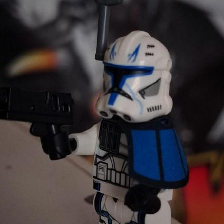

SOBRE MI
¡Hola! Soy Ignacio Catalán, estudiante de informática enfocado en la creación de aplicaciones de escritorio, lógica de backend y desarrollo de videojuegos.
Trabajo principalmente con Python, Java y motores como Godot, combinando una sólida base en arquitectura de bases de datos con el diseño de experiencias interactivas y funcionales. Siempre en constante aprendizaje de nuevas tecnologías y mejores prácticas de ingeniería de software.
TECNOLOGIAS